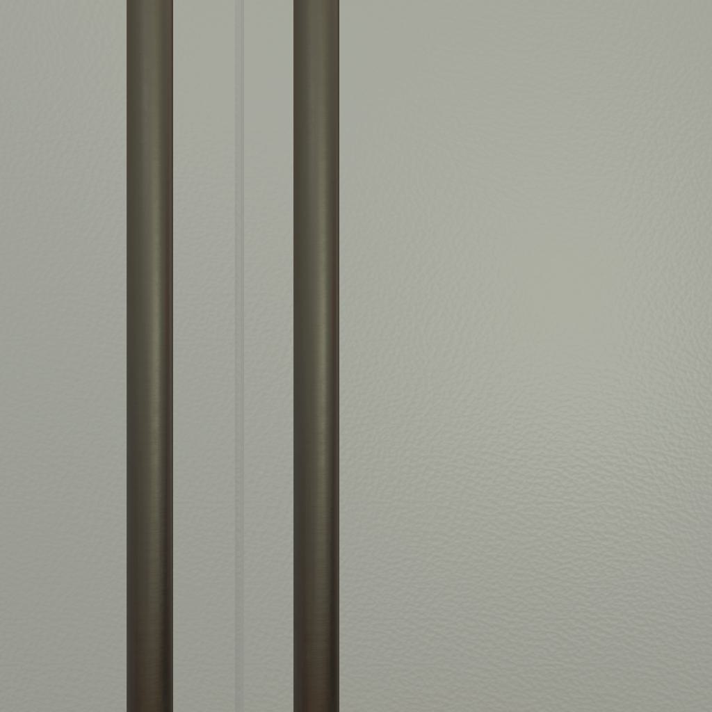

---------------------------------------------------------task: 24---------------------------------------------------------
--------------------------------------------------------------------------------------------------------------------------------------------------------------------
--------------------------------------------------------------------------------------------------------------------------------------------------------------------
Step:--------------------------------------------------------------------------10-------------------------------------------------------------------------------
----------------------------------------
VLM Prompt:
Image1:
**Instruction**
1. Analyze the provided image to identify all visible household objects, focusing on those relevant to the task description "put a hot tomato in fridge."
2. Use the analysis of the image and the task hint "The agent must find an object of the desired type, pick it up, go to a microwave, heat the object with the microwave, then find the correct location to place it, and put it down there. The agent does not need to use the microwave button or open the microwave to heat the object, and the agent just needs to do action that is "heat the object with the microwave"." to answer the question: what is the most reasonable action in the choices for the task description "put a hot tomato in fridge"?
4. Decide and write the answer using the template: The answer is: (i): , where i is the real number. If there is no desired object in the image, search every place based on **Initial Observation** to find the object. And if no one is exactly correct, choose a similar answer.
**Initial Observation**
You are in the middle of a room. Looking quickly around you, you can see cabinet (1-14), countertop (1-2), microwave (1), drawer (1-5), sink (1), sinkbasin (1), coffeemachine (1), stoveburner (1-4), toaster (1), fridge (1), diningtable (1), garbagecan (1), safe (1)
**Answer Choices**
(1): go to cabinet 1
(2): go to cabinet 3
(3): go to cabinet 4
(4): go to cabinet 5
(5): go to microwave 1
(6): go to cabinet 6
(7): go to drawer 1
(8): go to drawer 2
(9): go to drawer 3
(10): go to cabinet 7
(11): go to cabinet 8
(12): go to sink 1
(13): go to sinkbasin 1
(14): go to coffeemachine 1
(15): go to cabinet 9
(16): go to cabinet 10
(17): go to drawer 4
(18): go to cabinet 11
(19): go to stoveburner 1
(20): go to stoveburner 2
(21): go to stoveburner 3
(22): go to stoveburner 4
(23): go to cabinet 12
(24): go to toaster 1
(25): go to drawer 5
(26): go to countertop 2
(27): go to cabinet 13
(28): go to cabinet 14
(29): go to diningtable 1
(30): go to garbagecan 1
(31): go to safe 1
(32): open fridge 1
(33): close fridge 1
(34): examine fridge 1
**Answer**
Let's think step by step by following the instructions.
----------------------------------------
----------------------------------------
Original Response:
The task is to put a hot tomato in the fridge. The first step would be to find a tomato. As there are no visible tomatoes in the provided image, we move on to the Initial Observation which mentions various household objects and storage areas. It is likely that a tomato would be stored in a cabinet or a fridge rather than places like a drawer, sink, or appliances like a coffeemachine or toaster.
After finding the tomato, the next step is to heat it with the microwave according to the task hint. We do not need to perform any actions with the microwave button or door, so we just need to go to the microwave to perform the "heat the object with the microwave" action.
Finally, we would need to put the hot tomato in the fridge. The last action would be to open the fridge and place the tomato inside, and then close the fridge.
Based on these steps, the most reasonable actions from the answer choices would be:
- Find a tomato in a cabinet (likely choices could be cabinets 1, 3, 4, 5, 6, 7, 8, 9, 10, 11, 12, 13, 14)
- Go to microwave 1 to "heat the object with the microwave"
- Open fridge 1 to put the hot tomato inside
- Close fridge 1 after placing the tomato inside
Considering the image does not provide information on the exact location of tomatoes, we must search every place. The first reasonable action would be to go to a cabinet to find a tomato, and since cabinets are common storage places for food items, we would start there. After obtaining and heating the tomato, we would then interact with the fridge.
The answer is: (1): go to cabinet 1, and continue searching cabinets if the tomato is not there. Then, go to microwave 1 to heat it, open fridge 1, place the hot tomato inside, and close fridge 1.
----------------------------------------
----------------------------------------
>>> Refine Original VLM Response and Get Pure Action: go to cabinet 1, and continue searching cabinets if the tomato is not there
----------------------------------------
-----------------------------------------------------------------
Running time: 127.93362975120544 seconds
Total Money: 8.604120000000004
-----------------------------------------------------------------
-----------------------------------------------------------------
Text Observation:Nothing happens.
-----------------------------------------------------------------
UNSUCCEED